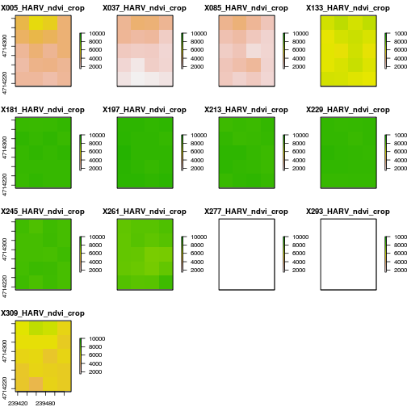
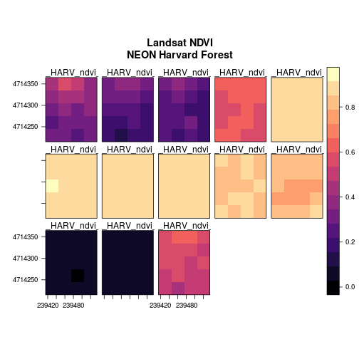
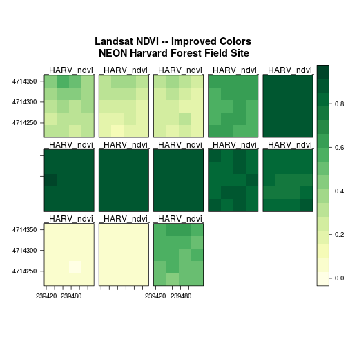
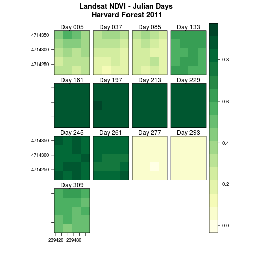
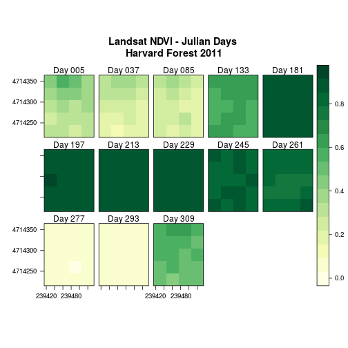
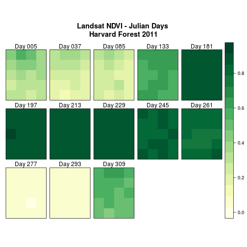
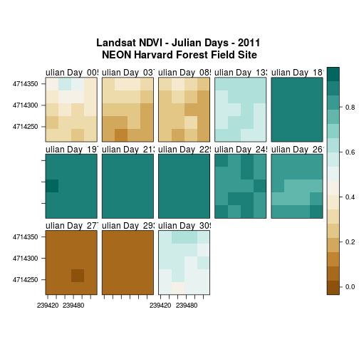

Plot Raster Time Series Data in R
Authors
Leah A. Wasser, Megan A. Jones, Zack Brym, Kristina Riemer, Jason Williams, Jeff Hollister, Mike Smorul, Joseph Stachelek
Overview
Teaching: 10 min
Exercises: 0 minQuestions
Be able to assign custom names to bands in a RasterStack for prettier plotting.
Understand advanced plotting of rasters using the
rasterVispackage andlevelplot.
Things You’ll Need To Complete This Tutorial
R Skill Level: Intermediate - you’ve got the basics of
Rdown. You will need the most current version ofRand, preferably,RStudioloaded on your computer to complete this tutorial.Install R Packages
- raster:
install.packages("raster")- rgdal:
install.packages("rgdal")rasterVis:
install.packages("rasterVis")- More on Packages in R - Adapted from Software Carpentry.
Data to Download
This tutorial covers how to improve plotting output using the rasterVis package
in R. Specifically it covers using levelplot() and adding meaningful custom
names to bands within a RasterStack.
Get Started
In this tutorial, we are working with the same set of rasters used in the
Raster Time Series Data in R
tutorial. This data is derived from the Landsat satellite and stored in
GeoTIFF format. Each raster covers the
NEON Harvard Forest field site.
If you have not already created the RasterStack, originally created in Raster Time Series Data in R , please create it now.
library(raster)
Loading required package: sp
library(rgdal)
rgdal: version: 1.2-8, (SVN revision 663)
Geospatial Data Abstraction Library extensions to R successfully loaded
Loaded GDAL runtime: GDAL 2.2.1, released 2017/06/23
Path to GDAL shared files: /usr/share/gdal/2.2
Loaded PROJ.4 runtime: Rel. 4.9.2, 08 September 2015, [PJ_VERSION: 492]
Path to PROJ.4 shared files: (autodetected)
Linking to sp version: 1.2-5
library(rasterVis)
Loading required package: lattice
Loading required package: latticeExtra
Loading required package: RColorBrewer
# Create list of NDVI file paths
all_NDVI_HARV <- list.files("data/NEON-DS-Landsat-NDVI/HARV/2011/NDVI", full.names = TRUE, pattern = ".tif$")
# Create a time series raster stack
NDVI_HARV_stack <- stack(all_NDVI_HARV)
# apply scale factor
NDVI_HARV_stack <- NDVI_HARV_stack/10000
Plot Raster Time Series Data
We can use the plot function to plot our raster time series data.
# view a histogram of all of the rasters
# nc specifies number of columns
plot(NDVI_HARV_stack,
zlim = c(.15, 1),
nc = 4)

Data Tip
The range of values for NDVI is 0-1. However, the data stored in our raster ranges from 0 - 10,000. If we view the metadata for the original .tif files, we will see a scale factor of 10,000 is defined. Multiplying values with decimal places by a factor of 10, allows the data to be stored in integer format (no decimals) rather than a floating point format (containing decimals). This keeps the file size smaller.
Our plot is nice however, it’s missing some key elements including, easily
readable titles. It also contains a legend that is repeated for each image. We
can use levelplot from the rasterVis package to make our plot prettier!
The syntax for the levelplot() function is similar to that for the plot()
function. We use main = "TITLE" to add a title to the entire plot series.
# create a `levelplot` plot
levelplot(NDVI_HARV_stack,
main = "Landsat NDVI\nNEON Harvard Forest")

Adjust the Color Ramp
Next, let’s adjust the color ramp used to render the rasters. First, we
can change the red color ramp to a green one that is more visually suited to our
NDVI (greenness) data using the colorRampPalette() function in combination with
colorBrewer.
# use colorbrewer which loads with the rasterVis package to generate
# a color ramp of yellow to green
cols <- colorRampPalette(brewer.pal(9, "YlGn"))
# create a level plot - plot
levelplot(NDVI_HARV_stack,
main = "Landsat NDVI -- Improved Colors \nNEON Harvard Forest Field Site",
col.regions=cols)

The yellow to green color ramp visually represents NDVI well given it’s a measure of greenness. Someone looking at the plot can quickly understand that pixels that are more green, have a higher NDVI value.
- For all of the
brewer.palramp names see the brewerpal page.
Data Tip
Cynthia Brewer, the creater of ColorBrewer, offers an online tool to help choose suitable color ramps, or to create your own. ColorBrewer 2.0; Color Advise for Cartography
Refine Plot & Tile Labels
Next, let’s label each raster in our plot with the Julian day that the raster
represents. The current names come from the band (layer names) stored in the
RasterStack and first part each name is the Julian day.
To create a more meaningful label we can remove the “x” and replace it with
“day” using the gsub() function in R. The syntax is as follows:
gsub("StringToReplace", "TextToReplaceIt", Robject).
First let’s remove “_HARV_NDVI_crop” from each label.
# view names for each raster layer
names(NDVI_HARV_stack)
[1] "X005_HARV_ndvi_crop" "X037_HARV_ndvi_crop" "X085_HARV_ndvi_crop"
[4] "X133_HARV_ndvi_crop" "X181_HARV_ndvi_crop" "X197_HARV_ndvi_crop"
[7] "X213_HARV_ndvi_crop" "X229_HARV_ndvi_crop" "X245_HARV_ndvi_crop"
[10] "X261_HARV_ndvi_crop" "X277_HARV_ndvi_crop" "X293_HARV_ndvi_crop"
[13] "X309_HARV_ndvi_crop"
# use gsub to modify label names.that we'll use for the plot
rasterNames <- gsub("X", "Day ", names(NDVI_HARV_stack))
# view Names
rasterNames
[1] "Day 005_HARV_ndvi_crop" "Day 037_HARV_ndvi_crop"
[3] "Day 085_HARV_ndvi_crop" "Day 133_HARV_ndvi_crop"
[5] "Day 181_HARV_ndvi_crop" "Day 197_HARV_ndvi_crop"
[7] "Day 213_HARV_ndvi_crop" "Day 229_HARV_ndvi_crop"
[9] "Day 245_HARV_ndvi_crop" "Day 261_HARV_ndvi_crop"
[11] "Day 277_HARV_ndvi_crop" "Day 293_HARV_ndvi_crop"
[13] "Day 309_HARV_ndvi_crop"
# Remove HARV_NDVI_crop from the second part of the string
rasterNames <- gsub("_HARV_ndvi_crop", "", rasterNames)
# view names for each raster layer
rasterNames
[1] "Day 005" "Day 037" "Day 085" "Day 133" "Day 181" "Day 197" "Day 213"
[8] "Day 229" "Day 245" "Day 261" "Day 277" "Day 293" "Day 309"
Data Tip
Instead of substituting “x” and “_HARV_NDVI_crop” separately, we could have used use the vertical bar character ( | ) to replace more than one element. For example “X|_HARV” tells
Rto replace all instances of both “X” and “_HARV” in the string. Example code to remove “x” an “_HARV…”:gsub("X|_HARV_NDVI_crop"," | ","rasterNames")
Once the names for each band have been reassigned, we can render our plot with
the new labels using names.attr=rasterNames.
# use level plot to create a nice plot with one legend and a 4x4 layout.
levelplot(NDVI_HARV_stack,
layout=c(4, 4), # create a 4x4 layout for the data
col.regions=cols, # add a color ramp
main = "Landsat NDVI - Julian Days \nHarvard Forest 2011",
names.attr=rasterNames)

We can adjust the columns of our plot too using layout=c(cols, rows). Below
we adjust the layout to be a matrix of 5 columns and 3 rows.
# use level plot to create a nice plot with one legend and a 4x4 layout.
levelplot(NDVI_HARV_stack,
layout=c(5, 3), # create a 5x3 layout for the data
col.regions=cols, # add a color ramp
main = "Landsat NDVI - Julian Days \nHarvard Forest 2011",
names.attr=rasterNames)

Finally, scales allows us to modify the x and y-axis scale. Let’s simply
remove the axis ticks from the plot with scales =list(draw=FALSE).
# use level plot to create a nice plot with one legend and a 4x4 layout.
levelplot(NDVI_HARV_stack,
layout=c(5, 3), # create a 5x3 layout for the data
col.regions=cols, # add a color ramp
main = "Landsat NDVI - Julian Days \nHarvard Forest 2011",
names.attr=rasterNames,
scales=list(draw=FALSE )) # remove axes labels & ticks

Challenge: Divergent Color Ramps
When we used
gsubto modify the tile labels we replaced the beginning of each tile title with “Day”. A more descriptive name could be “Julian Day”.
- Create a plot and label each tile “Julian Day” with the julian day value following.
- Change the colorramp to a divergent brown to green color ramp to represent the data. Hint: Use the brewerpal page to help choose a color ramp.
Questions: Does having a divergent color ramp represent the data better than a sequential color ramp (like “YlGn”)? Can you think of other data sets where a divergent color ramp may be best?
Answers
# change Day to Julian Day rasterNames <- gsub("Day","Julian Day ", rasterNames) # use level plot to create a nice plot with one legend and a 5x3 layout. levelplot(NDVI_HARV_stack, layout=c(5, 3), # create a 4x3 layout for the data col.regions=colorRampPalette(brewer.pal(9, "BrBG")), # specify color main = "Landsat NDVI - Julian Days - 2011 \nNEON Harvard Forest Field Site", names.attr=rasterNames)
# The sequential is better than the divergent as it is more akin to the process # of greening up, which starts off at one end and just keeps increasing.
Key Points